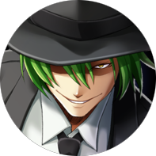
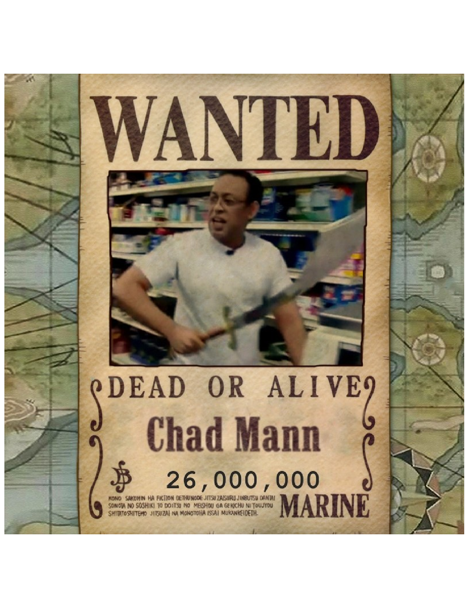
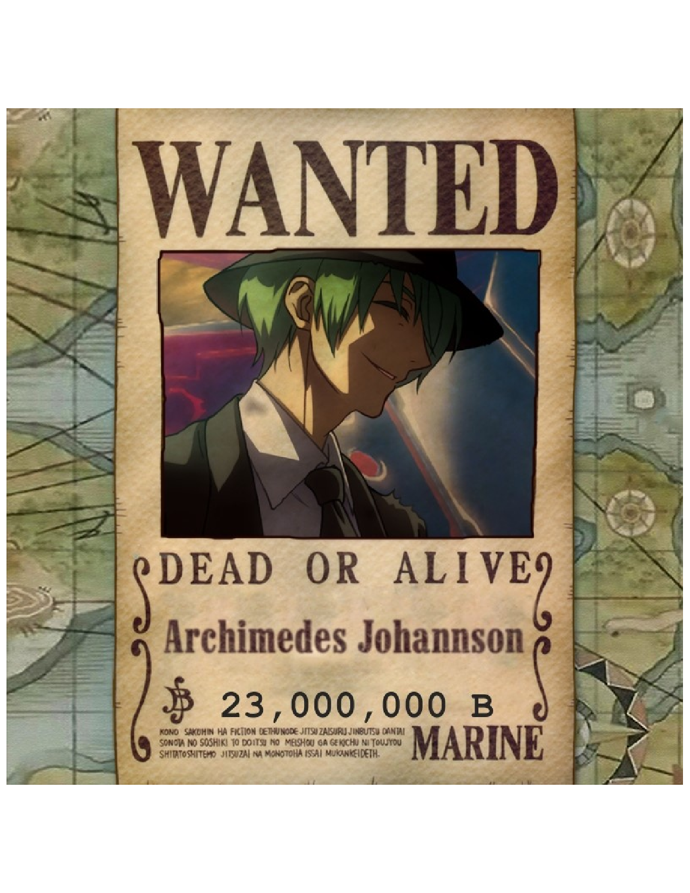
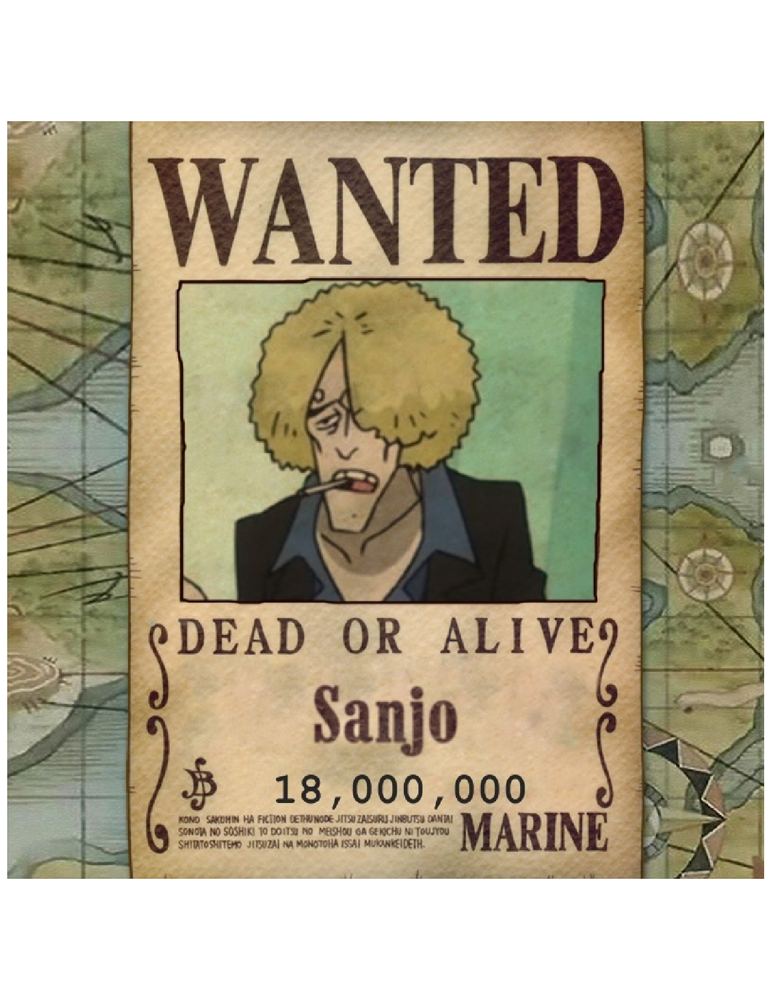
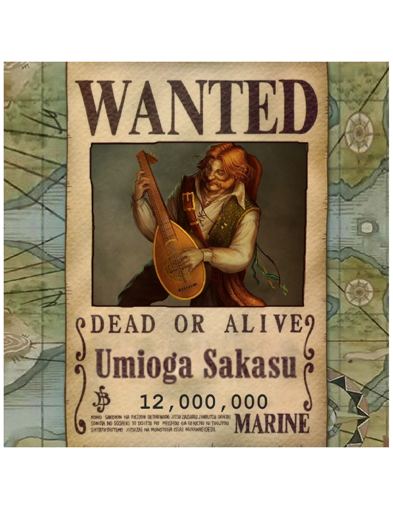

| New Game Pirates | |
|---|---|
| Statistics | |
| English Name: | New Game Pirates |
| Debut: | Session 1 |
| Captain: |
Chad |
| Main Ship: | Whispered Vesper |
| Total Bounty: | $13,000,000 |
New Game Pirates
The New Game Pirates are a group of pirates that originated from the West Blue, but have members from various diffrent areas. They are the Main Protagonists of One Piece DnD, and were led by Keek Frip origionally, but are now led by Chad.
The Name "New Game" comes from the former captain, Keep Frip, who came up with it hours before he died. The Crew sails upon the Whispered Vesper, which they purchased for $4,000,000 beli on Cresent Island. The New Game Pirates consist of five members who combinded bounties equal $13,000,000.
Jolly Roger
The Jolly Roger emblem is a Skull on a black background, with red plus signs in the eyes, on top of a cross made of white light. The Flag was drawn by the former captain, Keek Frip, after the initial one drawn by Archie was rejected.
Archie's Version

Keek Frip's Version

Crew Members
Main Crew
The first five memebers of the crew were all directly recruited by Keek Frip. Their members are quite diverse, with the origional crew being made of a Dwarf, a Fishman, a Long-Leg Tribesman, and two humans. After the death of the Dwarf, another short person joined.
| New Game Pirates | ||||
|---|---|---|---|---|
| Members | ||||
|  | ||||
| Suresh Wanty | Chad | Archimedes | Sanjo | |
| Umioga | ||||
| Companions | ||||
| Pinky | Brain | |||
| Ships | ||||
| Whispered Vesper | ||||
| Allies | ||||
| Vibing Pirates | ||||
Captaincy
After the death of Keek Frip at the hands of an ambush of Factory guards during the Scraptrap Arc, the crew held a vote to decide who should be the next captain. Chad and Suresh put themselves forward as possibilities at dinner after the death of Keek Frip. Each member of the crew was given a single vote, and Chad ended up winning the vote.
- Chad Mann: 3
- Suresh Wanty: 1
- Archimedes Johannson: 1
Sub-Groups
The New Game Pirates do not have any Sub-Groups
Terrirories
The New Game Pirates do not have any Terrirories
Crew Strength
Despite having a small number of members, the New Game pirates are a relativly strong group of rookie pirates. The crew has been able to use teamwork to defeat opponents above their league with ease.
Fighting Abilities
Each member of the crew fulfils a critical role on the ship, in addition to being powerful fighters. The current Captain as a skilled swordman, the Cook is a skilled martial artist, the Shipwright is a skilled Hammerman, and the Navigator is a skilled marksman.
Devil Fruit
Archie Possesses the Nagi Nagi no Mi, and is currently the only Devil Fruit user in the crew.
Haki
Although she hadn't realized it, Suresh possesses basic Armament Haki.
Alliances
The crew formed a temporary alliance with the Vibing pirates to escape undermountain.
Weaknesses
The crews main weaknesses are their small numbers, which allow them to be easily overwhelmed by large groups. The crews second main weakness is their recklessness, which leads them to split into smaller groups, and get overwhelmed.
Professions and Capabilities
| Name | Profession | Capabilities | Epithet |
|---|---|---|---|
| Captain Doctor |
• Martial Arts • Medical Knowledge • Leadership |
Waterbender | |
| Suresh Wanty | Shipwright | • Shipbuilding • Hammermanship |
Man Eater |
| Chad Mann | Shipwright Captain |
• Swordsmanship • Shipbuilding |
Merchant |
| Archimedes Johannson | Navigator | • Stealth • Marksmanship • Navigation |
Sharpshooter |
| Sanjo | Cook | • Cooking • Martial Arts • Helmsmanship |
Tresspasser |
| Umioga | Musician | • Music • Marksmanship |
None |
Bounties
Pre-Series
Chad Mann: First Bounty: $8,000,000
Sanjo: First Bounty: $5,000,000
Total: $13,000,000
Scraptrap Arc




Chad Mann: Bounty: $26,000,000
Suresh Wanty: Bounty: $25,000,000
Archimedes Johannson: Bounty: $23,000,000
Sanjo: Bounty: $18,000,000
Umioga Sakasu: Bounty: $12,000,000
Total: $104,000,000
Relationships Amongst the Crew
Dreams
Keek Frip: Unknown
Suresh Wanty: Unknown
Chad Mann: Unknown
Archimedes Johannson: To see every island, and avenge his first captain
Sanjo: Unknown
Umioga: Unknown
Locations Visited
Cresent Moon Island
Coliseum Island
Uncharted Island (Undermountain)
Scraptrap Island